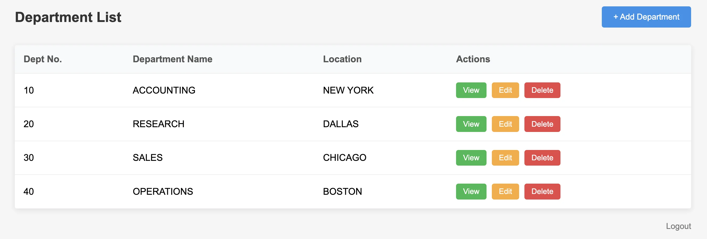
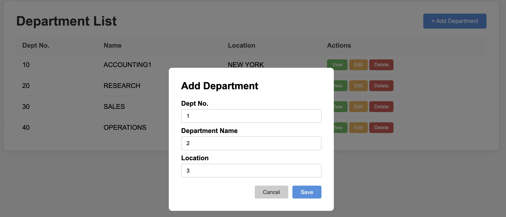
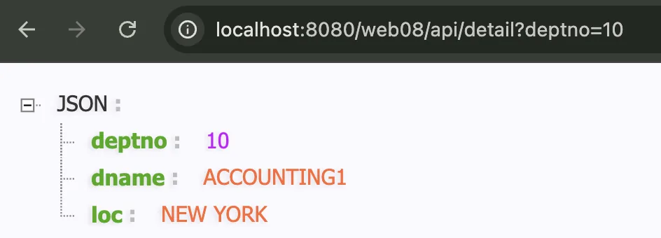
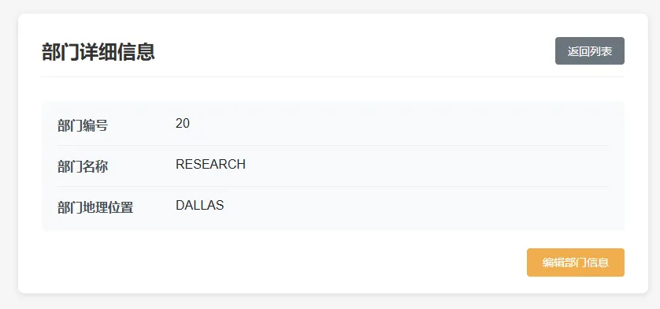
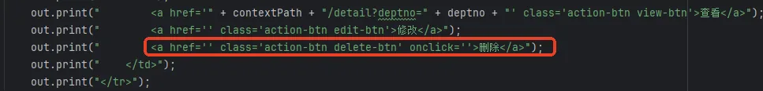

在项目的开发过程中会融入新知识点的讲解，请务必注意新知识点的吸收。
前端内容：static-website-development （这个是静态的不要了）
动态的前端内容：IndexServlet-java.md
数据库内容：database-connection
完整内容看：https://github.com/CharlesShan-hub/learn-servlet/tree/master/web_porjects/web08，这里不再赘述太多
WEB-INF/lib目录，添加 mysql 驱动 jar 包。JDBC 工具类使用之前的DbUtils-java.md
在 src 目录下新建 jdbc.properties 文件，提供以下配置：
driver=com.mysql.cj.jdbc.Driver
url=jdbc:mysql://localhost:3306/servlet
url2=jdbc:mysql://host.docker.internal:3306/servlet (如果是docker里面的就用这个)
user=root
password=
我们可以把对于数据库的访问，抽取成DAO（Data Access Object），专门用于操作数据库。然后entity是代表数据库的一行，也就是一个实体：
* com.jkweilai.servlet.dao.DeptDao.java：DeptDao-java.md
* com.jkweilai.servlet.dao.DeptDaoImpl.java：DeptDaoImpl-java.md
* com.jkweilai.servlet.entity.Dept.java：Dept-java.md
获取部门列表：编写DeptListServlet-java.md，连接数据库，动态打印表格的 tr。

其中，Java 15 正式引入了文本块（Text Blocks），使用 三个双引号 """ 作为定界符（而非反向单引号），用于简化多行字符串的编写：
String json = """
{
"name": "Java",
"version": 17
}
""";

查看部门(在部门列表页面找到 查看按钮，点击查看按钮，显示该部门详细信息。实现功能的关键步骤：在查看按钮上添加请求路径，并且携带部门编号。例如：/dept/detail?deptno=10）DeptDetailServlet-java.md


重点内容：
实现本功能时，使用了一个新的知识点：通过 request 对象获取用户提交的数据。
HTTP 协议中规定，无论是 get 还是 post 请求，提交数据的格式为：name=value&name=value&name=value
要获取 value，可以通过 request 对象 getParameter()方法来获取：
String value = request.getParameter("name");
需要注意的是 name必须要写正确了，尽量采用复制粘贴方式。
另外需要注意的是，该方法的返回值类型永远都是字符串形式。
删除部门
发送 /dept/delete?deptno=10的请求，根据部门编号删除部门信息。
DeptListServlet 中找到删除按钮：

添加删除的请求路径：
out.print(" <a href='javascript:void(0)' class='action-btn delete-btn' onclick='if(window.confirm(\"您确定删除吗？\"))document.location.href=\"" + contextPath + "/delete?deptno=" + deptno + "\"'>删除</a>");
实现删除:DeptDeleteServlet-java.md
再跳转到部门列表
删除之后，需要展示一个全新的列表，因此需要让浏览器重新发一次全新的 /dept/list请求，只有浏览器发送这个请求，Tomcat 才会执行 DeptListServlet，再查一次数据库，展示新的列表，在 JavaWeb 开发中如何使用 Java 代码让浏览器自动再发一次全新的请求呢？使用重定向机制。代码如下：
重点内容：
response.sendRedirect("/dept/list");
需要注意的是：重定向时的路径写法和前端超链接的写法一致，都以 / 开始，并且带项目名。
在 DeptDeleteServlet的末尾添加以下代码：
response.sendRedirect(request.getContextPath() + "/list");